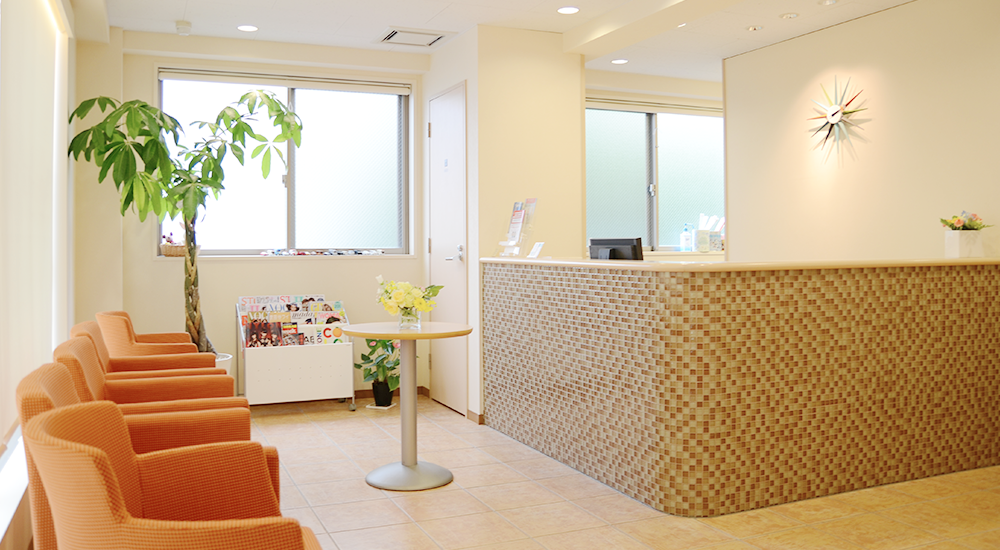
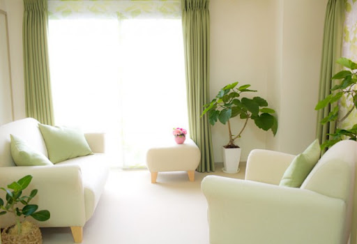

話すだけでも良い場所が、
"ここにあります"。
否定も診断も、無理にはしません。
※医師が対応します。
色々な価値観があるのが
当たり前の時代。
"あなたの感じ方も、そのままで大丈夫"。
無理に答えを出す必要はありませんよ。
こんな気持ちを
抱えていませんか？
- 理由はわからないけど、ずっとしんどい・・
- 寝てるのに寝た気がしない、起きた後の方がずっとしんどい・・
- 「気にしすぎ」と言われそうで、相談しづらい・・
- 病院に行くほどでもないと思われそう・・
"大丈夫です"。
"みなさん同じ思いを抱えています"。
よくあるご不安
- Q. 話がまとまってないが大丈夫ですか？
- A. もちろんです。上手く言葉にできなくても大丈夫ですよ。
- Q. 無理に診断されませんか？
- A. 無理矢理病名を付けたり、診断したり、押し付けるようなことは一切行いません。
- Q. 些細なことで相談して良いんですか？
- A. お悩みは、人それぞれです。一人一人のお悩みに真剣に向き合います。
ご相談の流れ
- 1. LINEでご連絡
今の気持ちを、そのまま送るだけで大丈夫です。
- 2. 医師が内容を確認
否定は一切せず、丁寧にお話を伺います。
- 3. 必要に応じてご案内
無理に次のステップを、ご案内することは一切ありません。
クリニックの中は、、

院内は、静かで落ち着いた空間です。
初めての方でも、緊張せずに過ごせる空間を大切にしています。

カウンセリングルームには、
観葉植物やアロマを炊いています。
このお部屋で、あなたの言葉に耳を傾けます。
〜医師紹介〜
当クリニック医師の中村と申します。
無理に答えを出すことや、診断を押し付けることはありません。
あなたのお話を丁寧に伺います。
これまでの経歴
早稲田大学大学院卒業後、
アメリカに渡り、心理学の研究を行う。
帰国後、悩みを抱える人々の憩いの場を作りたいと思い、
「メンタルヘルスクリニック〜カナリア〜」を設立。
一人一人と向き合い、寄り添うことを大切にしたクリニックで
設立から5年経つ今でも、変わらずにその姿勢を大切にしています。
あなたのお話を聞かせてください。
LINE相談について
LINEでのご相談は無料です。
必要な方にのみ、対面相談のご案内をしております。
これまでのご相談実績
開院5年
相談数 1万件以上
多くの方が、本来の自分を取り戻し人生を前向きに楽しんでいらっしゃいます。